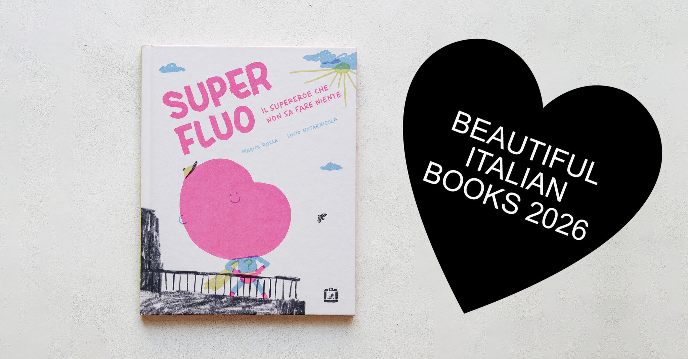

IBBY Italia Choice
Super Fluo è stato selezionato per IBBY Italia Choice 2026 nella categoria Picture Books.
Scopri la selezione ↗ Leggi l'annuncio di Corraini ↗
I supereroi non sono tutti uguali. C’è chi ritrova gli occhiali del papà, chi scalda il pranzo con un tocco e chi aggiusta tutto trasformando le mani in utensili. Con Super Fluo, però, è tutta un’altra storia. Lui è convinto di avere poteri straordinari: far crescere i fiori, spostare il Sole con lo yoga, far smettere di piovere dopo giorni di intensa concentrazione. Ma c’è una persona per cui Super Fluo è davvero un supereroe: la sua adorata Nonnina. Per lei trova il modo di far crescere i fiori, spostare il Sole, fermare la pioggia e soprattutto farla ridere di gusto.
Super Fluo è una storia sui superpoteri che non sembrano superpoteri. Quelli piccoli, quotidiani, quasi invisibili.
Super Fluo sogna grandi imprese, ma il suo talento più speciale nasce quando è accanto alla sua Nonnina: ascoltarla, aiutarla, farle compagnia, inventare modi per farla stare bene.
È un libro sull’attenzione e sull’empatia, su quello che possiamo fare per le persone che amiamo. Anche quando non sappiamo volare, sollevare palazzi o fermare davvero la pioggia.

L'idea di un supereroe completamente inutile, superfluo per l'appunto, nasce da un disegno di Lucio.

Le prime bozze di storyboard che sono diventate parte del libro a tutti gli effetti.

Appunti, idee e dettagli che non sono arrivati fino alla versione finale, ma fanno ancora parte della storia.
Super Fluo è stato selezionato per IBBY Italia Choice 2026 nella categoria Picture Books.
Scopri la selezione ↗ Leggi l'annuncio di Corraini ↗Super Fluo è tra i libri selezionati da Beautiful Italian Books 2026.

Clicca sull'immagine per ingrandirla.
Le illustrazioni di Lucio Notarnicola per Super Fluo sono presenti alla 44ª Mostra internazionale d'illustrazione per l'infanzia della Fondazione Štěpán Zavřel, a Sarmede.
Scopri la mostra ↗Recensioni, segnalazioni e consigli di lettura dedicati al nostro piccolo supereroe.
3 novembre 2026
Alfredo Paniconi racconta il libro attraverso la scrittura, le illustrazioni e la cura editoriale, soffermandosi sul passaggio dall'ironia alla tenerezza.
Leggi la recensione ↗Una lettura che mette al centro l'autostima, l'empatia e il valore dei piccoli gesti di cura.
Leggi la recensione ↗15 maggio 2026
La redazione de la Lettura consiglia Super Fluo nella rubrica «I consigli», raccontandone il protagonista e i suoi improbabili superpoteri.
Leggi la newsletter ↗27 luglio 2026
Una puntata de I libri di Radio Kids, nella rassegna curata dalla rivista Andersen, dedicata a Super Fluo.
Ascolta la puntata ↗6 maggio 2026
Super Fluo tra i consigli dei librai nella newsletter «Un inizio caleidoscopico».
Leggi il consiglio ↗